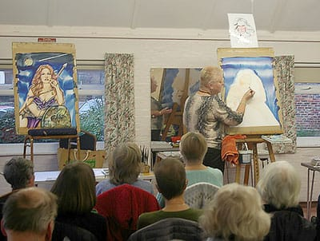
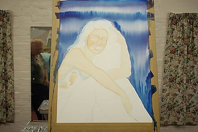
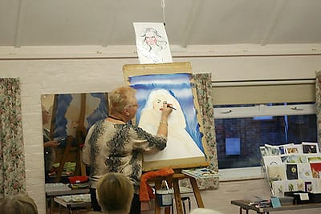
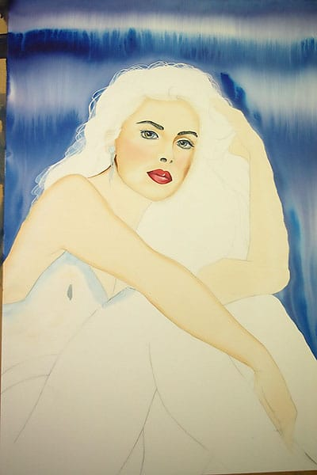
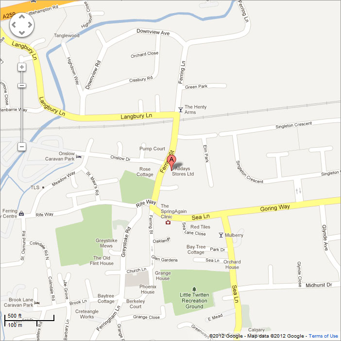

Contents:
- Winter Programme (September-April)
- Summer Programme (May-August)
- Demonstration Programme
- Our latest demonstration
- Our location
Winter Programme (September 2018-April 2019)
Members meet every Wednesday in Ferring Village Hall, 9:30-11:30 A.M.
| Date | Subject | Homework |
|---|---|---|
| Sep 5th | Work out some of your summer sketches | Summer sketches worked out, with good contrast |
| Sep 12th | Bells of any kind, make a good composition first & work out | |
| Sep 19th | Portrait model, one pose for the morning | |
| Sep 26th | Waiting at the bus stop & critique | |
| Oct 3rd | Oriental style landscape, watercolours & ink | Surrealistic paintings use your imagination |
| Oct 10th | Work out/finish the above using good contrast & focal point | |
| Oct 17th | Surrealistic still life. Study Dali etc. but use your own design | |
| Oct 24th | Sign posts, fences, poles etc. Mixed media | |
| Oct 31st | Make a composition from more than one picture/photo/sketch & critique | |
| Nov 7th | Messy table after tea/meal/painting session. | Christmas card and paper designs, or picture |
| Nov 14th | Work out the above in a finished painting, good composition | |
| Nov 21st | Nude model posing | |
| Nov 28th | Design Xmas card, 1 large flower filling page, colours and gold & critique | |
| Dec 5th | Bring lace, or detailed object, piece of bark. Pencil drawing | Patterns in pencil |
| Dec 12th | Make patterns with various twigs, pen ink, splatter & pastel shade colours in between | |
| Jan 2nd | Composition with tubular shapes. Watercolour glazes | Poster design of your own choice, for a holiday resort |
| Jan 9th | People lost in an abstract world, possibly the above | |
| Jan 16th | Self portrait. Study Jugend style & adopt, use your own design | |
| Jan 23rd | Poster for Sussex holidays, broad shapes 3 col. combinations | |
| Jan 30th | Horse riding on the beach & critique | |
| Feb 6th | Build impossible structure. Study M.C. Escher, but own design | Treasure island With lots of colour and structures |
| Feb 13th | Losing balance, abstract. Keep it very simple, broad design | |
| Feb 20th | Nude model posing. Think of creating a statue/solid shape | |
| Feb 27th | Treasure Island. Use lots of shades of brown and some gold & critique | |
| Mar 6th | Fish, dead/alive. Ink/tea/watercolour/splatter. Experiment | Snow scene with animals in it |
| Mar 13th | A monster in land/sea/town scape, can use fish from above | |
| Mar 20th | Animals at play. Pastels/acrylic | |
| Mar 27th | Snow scene in woods/garden/with animals perhaps & critique | |
| Apr 3rd | Study famous painting. Copy, but change the main subject | Rooftops. Turn it into an interesting design |
| Apr 10th | As above, stick closely to artists technique, make it a surprise | |
| Apr 17th | Portrait. One pose for the morning. Try pastel/watercolour/pen | |
| Apr 24th | Flat abstract geometric shapes, repetitive eg. roof tops & critique | |
| May 1st | Outdoor painting begins | |
Learn to put a clear focal point and good contrast in your work.
Work together and exchange ideas in class as much as possible & enjoy!
Summer Programme
Members meet in different locations every week to sketch and paint outside.
See above for our current winter programme!
Demonstration Meetings
Art demonstration meetings are held on the third Saturday of every month at
Ferring Village Hall, 2.30-4:30 p.m.,
and visitors are welcome at these (£4 per meeting).
Demonstration Programme 2018/19
| 2018 | 2018 cont'd | ||
|---|---|---|---|
| May 19th | Catherine Barnes The way forward - finding a solution to your artwork problems | Sep 15th | Paul Witton
Watercolour in a loose and engaging style (At St Andrews Church Hall) |
| June 16th | Lindsey Pearson Using Brusho - an interactive session | Oct 20th | Anne Chadwick Creating an interesting sky in acrylics |
| July 30th-August 5th | Exhibition of members work in Ferring Village Hall | Nov 17th | Marcus Finch A figurative session in acrylic or oil |
| 2019 | |||
| Jan 19th | Sharon Hurst A fantasy face concentrating on shaping, skin tones and glazing, in watercolour | ||
| Feb 16th | Paul Simmons An oil landscape | ||
| Mar 30th | Tony Parsons Portrait in oils | ||
| Apr 27th | AGM |
Our latest demonstration
"Painting a fantasy face in watercolour" by Sharon Hurst
Despite the dismal weather the event was well attended. There were only just enough seats for everyone, including 10 guests.
Sharon travelled from Hampshire and was clearly full of enthusiasm for both her subject matter and medium. The support she used was Bockingford NOT 140lb paper that had not been stretched, but was firmly secured with good brown adhesive tape. The paints used were mainly Shin Han watercolour tubes.
The subject for the day had been drawn out in pencil, and the head had been masked with blue masking fluid. One of her trade mark backgrounds was then rapidly applied with a large brush to a very wet paper. Despite working almost vertically, no runs or drips occurred.

Sharon then demonstrated her basic skin tone mix Burnt Sienna with a touch of Alizarin Crimson and toned down with a touch of Burnt Umber. A great deal of water was then added to create the face skin tone wash. The face and arms of the subject were given a quick wash. We were told for not the last time not to touch it when it’s wet. Shaping was applied to the dried surface with a slightly stronger mix of the same wash. A two brush technique was demonstrated – one for the paint and one for the clean water. Sharon went into detail of the anatomy of the face, and how a portrait painter can apply large shapes to quickly gain a convincing likeness.

After the break Sharon started to paint in the features. Using a smaller brush and all the time telling the audience what she was doing and why. We were treated to a lesson on anatomy as well as painting.

Much of the material that Sharon referred to and used is available to view or download on her website http://www.sharonhurst.co.uk/
By the end of the session Sharon had achieved a very convincing image of an attractive young woman. She explained that many more washes and attention to detail would be needed before completion.
The audience were engaged, informed and entertained. Thank you Sharon for an excellent start to our demonstration programme for 2019.

Click here to see some of our previous demonstrations!
Location of Ferring Village Hall
Address: Ferring Street, Ferring, West Sussex, BN12 5JP
Map:
Click here to see this on Google Maps!
